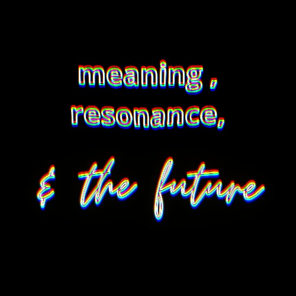
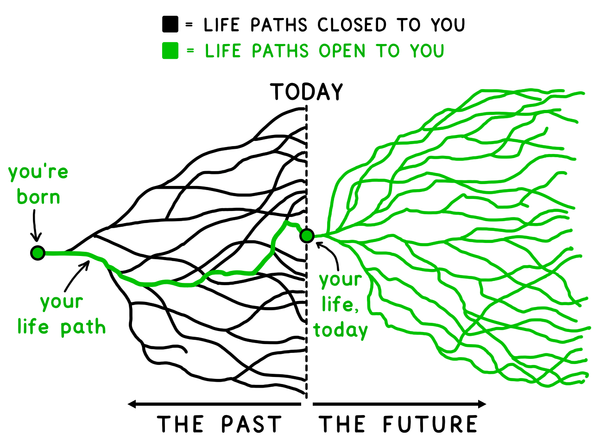

Reason, Resonance & the Future
Reason, Resonance and the Future

lightly structured, highly exploratory, juicy leaps of logic
There is yet one leverage point that is even higher than changing a paradigm. That is to keep oneself unattached in the arena of paradigms, to stay flexible, to realize that NO paradigm is “true,” that every one, including the one that sweetly shapes your own worldview, is a tremendously limited understanding of an immense and amazing universe that is far beyond human comprehension.
— Donna Meadows, Places to Intervene in a System
Metaphors for Experience
Here's Derek Sivers with conflicting ideas on how to live:
- Be independent.
- Commit.
- Fill your senses.
- Do nothing.
- Think super-long-term.
- Intertwine with the world.
- Make memories.
- Master something.
- Let randomness rule.
- Pursue pain.
- Do whatever you want now.
- Be a famous pioneer.
- Chase the future.
- Value only what has endured.
- Learn.
- Follow the great book.
- Laugh at life.
- Prepare for the worst.
- Live for others.
- Get rich.
- Reinvent yourself regularly.
- Love.
- Create.
- Don’t die.
- Make a million mistakes.
- Make change.
- Balance everything.
Meaning is cultivated, it's explanations, knowledge, reasons and ties the past and future together.
Resonance, or psychological richness is experienced.
Both seem to be really important.
Things that seem to shape individuals and their meaning-making over time, basically feedback loops we're plugged into:
- People we interact with.
- Work
- Environment, or where you spend time. We can agree that "Online" is a place now. (See networked states)
- Beliefs and incentives, which shape decision making.
- Information streams — often path-dependent on others in this list.
- Health — mental, emotional, physical, and often path-dependent on others in this list.
Reality at our level of influence is the persistent reality of atoms and bits. Everything else is abstracted and given meanings for useful interaction.
Some forms of meaning are especially sticky because of their general usefulness, and greater explanatory power. The education system is widely accepted to be broken at teaching kids, and incentivizes kids to pursue grades as a proxy for learning and adopts a largely one-size-fits-all approach on learning, a relic of the industrial age.
Culture ingrains shared meanings for collaboration between us, developed over time and useful in affecting the world. But after a while, when society get comfortable with a focused way of framing things, reality intervenes, something breaks, and society gets reality checks.
A logical language, like numbers or binary code has high explanatory power and is easily scalable. It becomes a tool that helps build other tools, like the computer, which then becomes an substrate for information applications which affects human information streams and incentives.
With changing environment and incentives, new problems appear and solutions are created. Work is to be done to execute on solutions.
There has to be incentives, and there has to be momentum. We, humans, need both meaning and resonance.
mini essay on blockchain
Culture, or societal norms, idea space and practices, is downstream of information technology, which has historically been regulated by power structures of the age.
Alignment at the large scale is hard without traditional power structures, and is what makes blockchain applications valuable. Blockchain is a solution to the hard problem of collaboration at large scale without the partially exploitative regulatory top-down management.
Good blockchain designs can align incentives of individuals with parts of society. Common knowledge of on-chain activity and bots could be used to delay arbitrage attempts. The network benefits from usage: Usage of the network is equivalent to propagating the belief system of the network. Good blockchains aren't fragile.
The value capture by nodes in the network is reflective of how well it propagates the belief system, and in case of most traded tokens, what effect it has on market price. With sub-cultures now created through the internet, which itself is the largest network on the planet, we live in a time where the the individual is increasingly sovereign with increased range of influence and generally broad access to the medium that the subculture lives in.
Back to meaning. Our brains encodes information to conserve processing power and updates with every re-call. We could come up with some metaphors we we use to filter our experience. A rough and incomplete list of metaphors for experience —
Metaphors based on external effects:
- A determined Mission / Goal Orientation
- A deliberate Mastery / Skill Perfection
- An analytical Experiment / Reality Testing
- A lesson / Knowledge Acquisition
- A fun Party / Sharing Experience
Metaphors from gaming:
- A real time strategy game / Strategy Deployment
- A tycoon game / Resource Accumulation
- A tower defense game / Clearing Obstacles
- A moba game / Raiding
- A clicker game / Being Leveraged
I think these capture things pretty nicely. I might describe life as a ride, which will come to end one day, with us filtering our experience via all of above at different times. Our experience in space-time, which gives us the ability to percieve, explain and affect our reality, call it consciousness, for now, is finite. Scarcity creates perceived value, so consciousness is infinitely valuable.
Reflecting on meaning of experience at length ends up in circular reasoning. Because meaning is constructed. Meaning is an answer to a question. There are likely other answers too, and some might express reality better than others. Example: Better rocket ships.
So, when you hit a limit on meaning, do something for experiential understanding and express it.
Question: Given my state of X, how do I improve or maintain mine and society's state, under these constraints?
This aligns individual incentives with society. Everyone has different answers, but I have an inkling they might follow similar patterns.
There might be multiple answers. Some answers might be better than others, because they align incentives of individual with society.
Externalized thoughts/ideas are more reliable, because the they can be (1) objectively stated and analyzed and (2) shared.
Resonance is flow state, creating experience, shaping experience, being understood and improvising.
The Future is Created
"Never forget the thousand year view" -— Proverb
In an age of networks and leverage, the time gap between cause and effect is shrunk dramatically.
“The future has arrived — it’s just not evenly distributed yet.” -— William Gibson
“The best way to predict your future is to create it”. — Alan Kay
"We're driving faster and faster into the future, trying to steer by using only the rear-view mirror." -— McLuhan

WaitbutWhy
Meaning, Experience and the Future
To affect change, we need to exercise our ability to decide and act. Decisions have to be made.
Sometimes a bunch of people have to decide. People need meaning/resonance and incentives to decide and act on the decision.
This is why I think blockchains are important. Value creation and capture by individual nodes is more reflective - it incentivizes services/tools to provide maximum value at minimum cost. And nodes tend to gravitate towards monopolies.
Currently networks tend to reward capture of attention.
This is mostly a win-lose game with existing monopolies/networks profiting from hijacking the human wetware, and might be seen in hindsight as unethical. Value capture, attention in this case, also accelerates monopolies within the network. Individual monopolies, and groups of individual monopolies, emerge within networks.
We need built-in incentive alignment — trust in value capture for the value creation — and the network to have steep decay functions on monopolies, possibly with a caps on fear and greed. The next generation of services will be ones which fix this problem. It's likely a blockchain. The best part of a good blockchain is broad visibility of actions on-chain — the network could be self-correcting.
Naturally as humans, we have anthropic bias. We value our own consciousness and continued place in the universe to be a fundamental aspect of reality.
The internet's monoculture incentivizes more humans to speak a common language and provides access to same levered tools. But networks form with people who resonate with certain beliefs, and the nodes which get the most attention tend to monopolize. Now the network is a power structure and monopolies can create general order or chaos, unless they are disincentivized to do so.
So ethics is the hard problem here:
Given gatekeeping is capping maximum influence,
(1) Should there be gatekeeping at the network level? my take: yes, for individual monopolies
(2) What should be gatekept? my take: individual fear and greed
(3) How do we do it? my take, some possible solutions -
- Humans are biased and temporal, so inevitably "artificial intelligence" (Centralized, would possibly look like multiple agents keeping each other in check)
- Power structures regulating fear and greed with help of code (Partially Centralized, Dystopian)
- Blockchain based states exercising decentralized power (Decentralized)
- Generate enough niches with so lots of monopolies and balance of power (Organic)
If we solve this, it could sustain growth with capping the amount of chaos. Parts of the network would be orderly, parts of them chaotic, and the network would be ever evolving. We would exist in what Kevin Kelly calls the perpetual now.
Currently the network owners tend to be the gatekeepers. We need ethical technology to manage network greed and fear. Low long-term downside/risk with high immediate upside. It's likely going to be an AI.
Since humans sort of need meaning and resonance, we are biased. AI and bots are not. So a general problem solving machine, or super intelligence, is useful at a societal level.
However AI alignment is imperative.We do not want to end up with too much order or chaos, too quickly. We'll need to paddle first, adjust direction and swim.